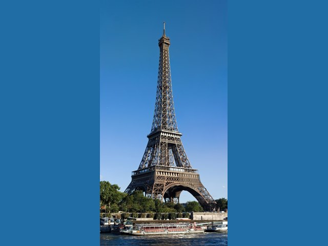
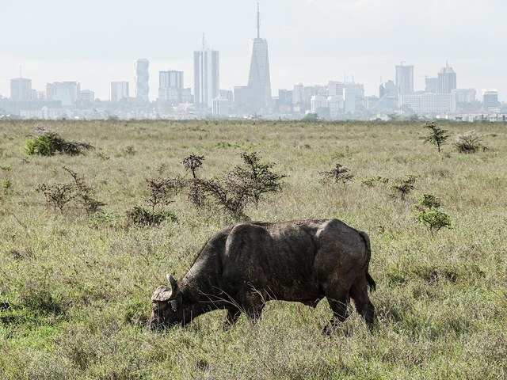
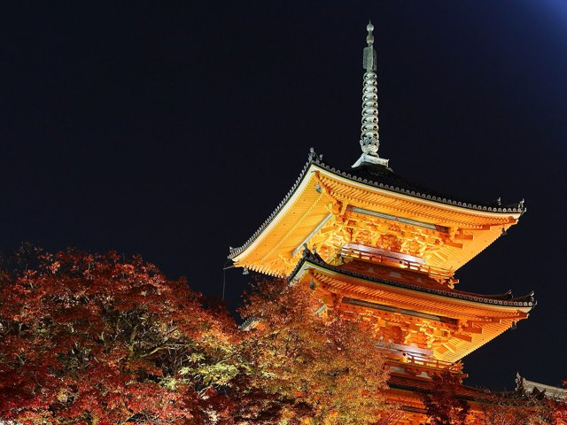
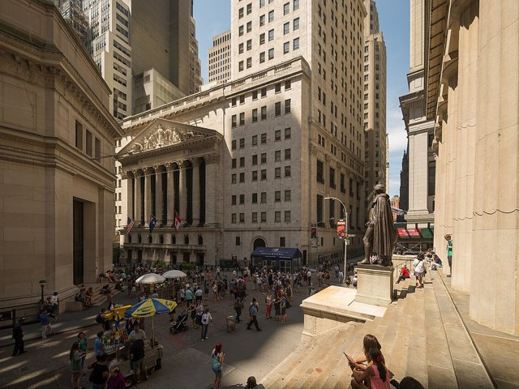
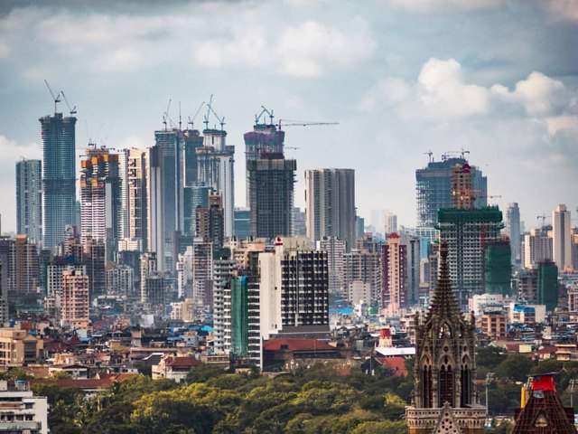
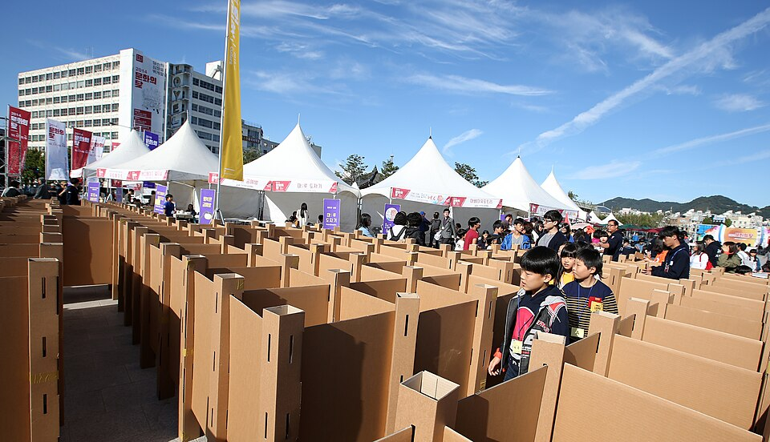

도시와 반대되는 곳은 촌락이다. 촌락에서는 농사·고기잡이·임업처럼 자연에서 바로 얻는 일이 많고, 도시에서는 물건을 만들거나 사람에게 서비스를 파는 일이 많다.
그래서 도시에는 사람과 회사, 관공서, 학교, 병원이 한곳에 모인다. 우리가 사는 광주도 그런 도시다.
🎙️ 2025년, 세계 사람 100명 가운데 58명꼴(57.8%)이 도시에 살아. 둘 중 한 명이 넘는 거지. 그런데 친구에게 '아는 도시 셋'을 물으면 저마다 다른 도시를 대. 그 까닭이 다음 단계야.
📖 2단계: 도시는 무엇으로 이름을 얻을까
📕 교과서 146~147쪽 펴고 · 배정 시간 11분
세계에는 수많은 도시가 있다. 그중 이름난 도시는 주로 인구 규모가 큰 도시, 정치·경제의 중심 도시, 문화를 이끄는 도시다. 종교나 역사의 의미가 깊은 도시도 있다. 빼어난 자연 경치 덕분에 ③ 산업이 발달한 도시도 있고, 환경이 쾌적해 ④의 질이 높은 도시도 명성이 높다.
교과서 지도에 나온 도시 여덟 곳이다. ▶로 넘기며 사진과 설명을 보고 이 도시가 무엇으로 이름났는지 골라 보자. 다 고르면 까닭이 열린다.0 / 8

프랑스 파리
에펠 탑과 루브르 박물관이 있고, 세계의 유행을 이끈다
미술관·박물관과 패션으로 세계 문화의 중심이 된 도시다
벨기에 브뤼셀
유럽 연합(EU)의 본부 건물이 있다
유럽 여러 나라의 정치와 경제를 논의하는 곳이다

케냐 나이로비
도심 빌딩이 바로 보이는 초원에서 물소와 사자 같은 야생 동물을 볼 수 있다
사바나 초원과 야생 동물이 사람들을 불러 모은다

일본 교토
옛날 일본의 수도로, 오래된 절과 신사가 많다
옛 문화가 남아 있는 대표적인 역사 도시다
스위스 취리히
맑은 강과 호수, 녹지가 도시 한가운데에 어우러져 있다
하천을 되살리는 사업으로 환경을 가꿔 살기 좋은 도시로 손꼽힌다

미국 뉴욕
세계에서 가장 큰 증권 거래소가 있는 월스트리트
세계의 돈이 모이는 금융의 중심지다

인도 뭄바이
정보 기술 회사와 연구소, 대학이 모여 있다
인도 정보 기술 산업과 상업의 중심 도시다
이스라엘 예루살렘
유대교·크리스트교·이슬람교의 성지가 한 도시에 있다
세 종교가 모두 거룩하게 여기는 도시다
1 / 8
📕 교과서 147쪽 · 지도 「세계의 주요 도시」
맨 위 '오늘 나오는 곳' 지도에서 여덟 도시를 찾아보자. 적도에서 가장 가까운 도시는 어디이고, 그 도시는 적도의 북쪽과 남쪽 가운데 어느 쪽에 있을까?
🎙️ 표지의 기린 기억나? 나이로비 국립 공원은 도심에서 약 10km밖에 안 떨어져 있어. 같은 나이로비도 누구에게는 '케냐의 수도', 누구에게는 '기린의 도시'야. 도시는 한 가지 이름으로만 기억되지 않아.
📖 3단계: 사람들은 왜 그 도시에 끌릴까
📕 교과서 148쪽 펴고 · 배정 시간 10분
🎙️ 2단계는 '무엇으로 이름났나'를 봤어. 이번엔 한 걸음 더 — 사람들이 '가 보고 싶다', '살아 보고 싶다'고 말하게 만드는 힘, 곧 매력이야.
세계에는 많은 사람이 가 보고 싶거나 살아 보고 싶은 도시들이 있다. 그 매력은 여러 가지다. 정치·경제적 ⑤이 뛰어난 도시가 있고, 자연 ⑥이 수려하거나 기후가 쾌적한 도시가 있다. 훌륭한 문화적 ⑦이나, 지역 주민의 친절과 도시에 대한 ⑧도 도시의 매력이 된다.
광주와 가까운 순천은 넓은 갯벌과 갈대밭, 철새가 어우러진 순천만을 품고 있어, 이것을 보러 사람들이 찾아온다. 광주에서는 2011년 5월 1980년 5·18 민주화 운동의 기록물이 유네스코 세계기록유산이 되었고, 2015년 11월 그 현장이었던 옛 전남도청 자리에 국립아시아문화전당이 문을 열었다. 1단계 사진의 넓은 광장과 건물이 바로 그곳이다.
📕 교과서 148쪽 · 생각 열기 Q2
내가 사는 지역은 어떤 매력이 있는지 하나를 적자.
🎙️ 교과서는 '내가 사는 지역의 매력을 찾아보면, 우리가 사는 곳을 더욱 매력 있게 만드는 데 도움이 된다'고 해. 매일 지나다니는 길에도 다른 사람에겐 '가 보고 싶은' 무언가가 있을지 몰라.
직접 해 보는 곳
✏️ 활동 1 — 가 보고 싶은 도시 한 곳
오늘 본 도시나 내가 가 보고 싶은 도시 하나를 골라 표를 채우자. 2단계 카드의 세 갈래와 3단계 카드의 네 매력 요소를 둘 다 써 본다.
항목
내가 고른 도시
도시 이름
위치(대륙·나라)
무엇으로 이름났나(2단계 카드의 세 갈래)
도시의 매력과 그 매력 요소(3단계 카드의 네 요소)
✅ 스스로 점검 — 셋째 칸과 넷째 칸이 같은 말이 되었나? 괜찮다. '무엇으로 이름났나'와 '왜 끌리나'는 자주 겹친다. 다만 넷째 칸은 교과서 네 요소의 이름으로 말할 수 있어야 한다.
직접 해 보는 곳
❓ OX 퀴즈
번호
문장
O/X
1
주민 대부분이 논밭에서 농사를 짓고 바다에서 고기를 잡는 마을은 도시의 특징을 잘 보여 준다.
2
취리히는 시 인구가 40만 명대로 크지 않으니 세계적으로 이름난 도시가 될 수 없다.
3
같은 도시라도 사람마다 떠올리는 모습이 다를 수 있다.
4
도시의 매력은 자연 경치 한 가지뿐이다.
5
지역 주민의 친절도 도시의 매력이 될 수 있다.
직접 해 보는 곳
🧠 핵심 3줄 (교과서 덮고!)
안 보고, 오늘 배운 것을 문장 세 개로 쓰자. 줄마다 ~다.로 끝낸다.
🔍 가장 자신 없는 줄 끝에 (?)를 붙이고, 그 줄만 교과서 146~149쪽에서 확인하자.
1.
2.
3.
직접 해 보는 곳
💭 더 생각해 보기
🎙️ 오늘 너는
광주역 관광 안내소에서 외국 친구를 맞는 안내원
친구가 광주를 한마디로 기억하게 할 별명을 지어 주자. 아래 문 두 개 가운데 하나를 골라 들어간다.
1문을 하나 고르자 정답은 없다 · 근거를 누르면 학습지의 그 자리로 간다
국립아시아문화전당 일대(2015) — 1단계에서 본 사진
🚪 문 A
눈에 보이는 매력으로
장소·건물·경치처럼 사진으로 찍을 수 있는 광주의 매력으로 별명을 짓는다.
📎 끌어올 수 있는 근거
내가 아는 광주의 장소·건물·경치
🔎 같은 종류, 다른 곳의 예

5·18 민주광장의 음식·예술 축제(2014년 10월) — 1980년 5·18의 광장에 지금은 사람들이 모인다
🚪 문 B
눈에 보이지 않는 매력으로
축제·이웃·사람들이 고장을 아끼는 마음처럼 겪어 봐야 아는 광주의 매력으로 별명을 짓는다.
📎 끌어올 수 있는 근거
내가 가 본 광주의 축제나 먹어 본 음식
🔎 같은 종류, 다른 곳의 예
2네 덩어리로 쓰자 시작 말은 그대로 써도, 바꿔 써도, 안 써도 된다
1별명별명을 지어 보자.나는 광주를 '…'라고 소개하고 싶다.
2네 매력 요소교과서 네 매력 요소 가운데 어디에 들어갈까?이 별명은 … 요소에 들어간다.
3까닭그렇게 본 까닭을 광주의 사실(장소·사건·특징)로 들자.왜냐하면 광주에는 …이 있기 때문이다.